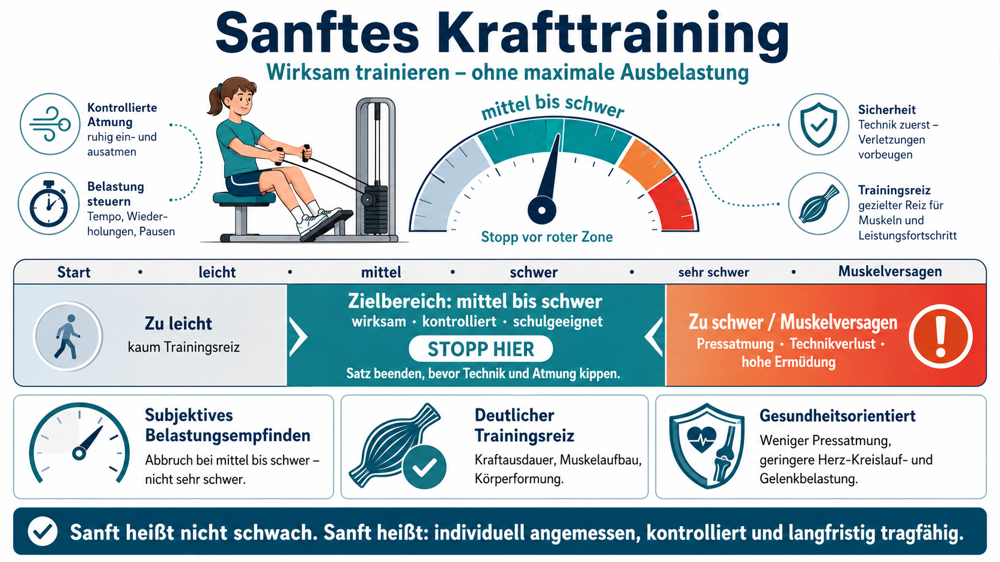
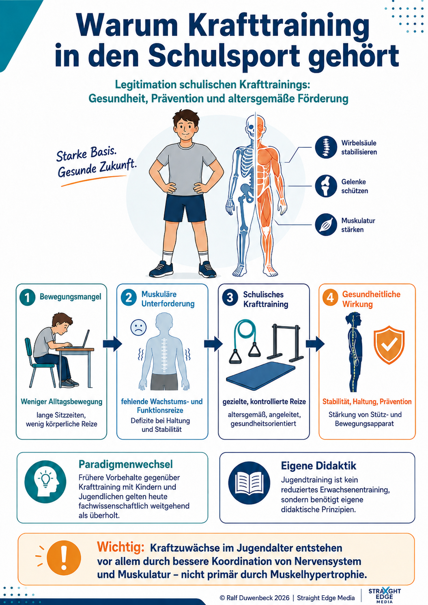
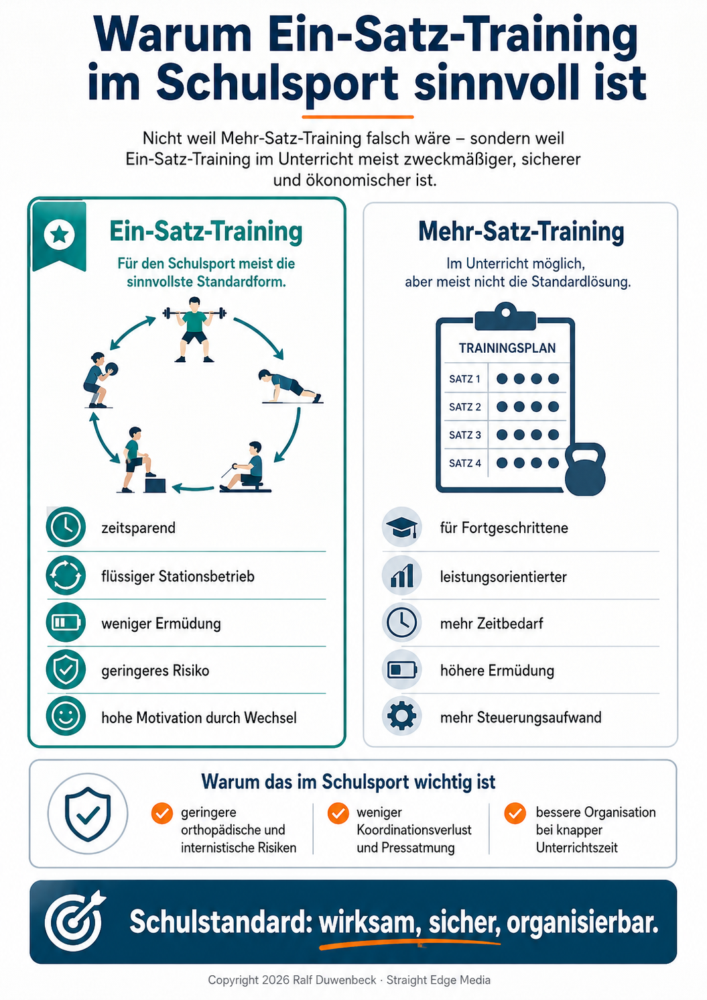
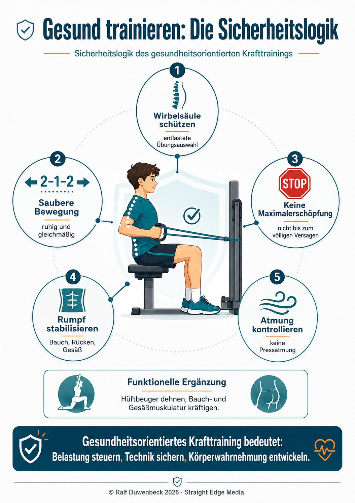
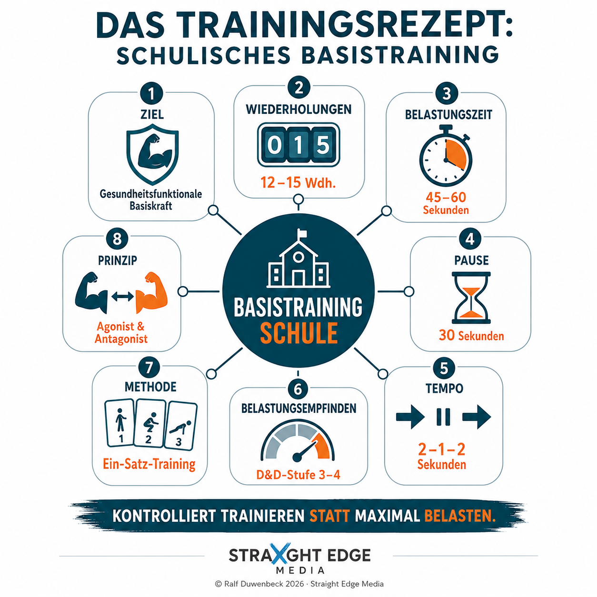

Gesundheitsorientiertes Krafttraining im Schulsport
Fachwissenschaftliche Analyse eines fitnessorientierten Unterrichtsvorhabens: Warum Krafttraining in die Schule gehört, wie es methodisch sanft und zeitökonomisch gelingt und wie die Belastung schülergerecht gesteuert wird.

Abschnitt 1
Relevanz & Wandel des Schulsport-Krafttrainings
Die Einbettung von Krafttraining in den schulischen Fächerkanon resultiert aus gravierenden Veränderungen der jugendlichen Umwelt und modernen sportmedizinischen Erkenntnissen.

Abschnitt 2
Die Qual der Methodenwahl: Ein-Satz- vs. Mehr-Satz-Training
Im eng getakteten Schulalltag stehen sich zwei Kernkonzepte gegenüber. Die wissenschaftliche Evidenz liefert klare Vorteile für zeiteffiziente Ansätze.


Abschnitt 3
Belastungssteuerung und Gewichtsbestimmung
Die korrekte Definition des Trainingsgewichts entscheidet über den gesundheitlichen Nutzwert. Das Werk kontrastiert zwei Herangehensweisen.
Die 6-Stufen-Skala zur Beurteilung der Belastungsempfindung (D&D-Skala)
| Stufe | Subjektiver Eindruck | Konkrete Befindlichkeit / Ausprägung |
|---|---|---|
| 1 | Anstrengung kaum vorhanden. | Das Trainingsgewicht wurde fast nicht gespürt. |
| 2 | Anstrengung war vorhanden. | Das Gewicht war sehr leicht zu bewältigen. |
| 3 · Ziel | Es war anstrengend. | Das Gewicht konnte dennoch ganz gut bewältigt werden. |
| 4 · Ziel | Es war sehr anstrengend. | Das Gewicht konnte gerade so oft (wie vorgegeben) bewältigt werden. |
| 5 | Es war zu anstrengend. | Das Gewicht konnte nicht so oft wie gewollt bewältigt werden. |
| 6 | Es war viel zu anstrengend. | Das Gewicht war viel zu hoch; die Übung konnte gar nicht bewältigt werden. |
Abschnitt 4
Gestaltungsprinzipien des gesundheitsfunktionalen Krafttrainings
Das schulische Training wird als „Basistraining" charakterisiert – eine methodisch sinnvolle Mischform, die sich im Spektrum der Wiederholungszahlen präzise positioniert.
Einordnung des Basistrainings
| Trainingsform | Primäres Trainingsziel | Ziel-Wiederholungszahl | Steuerungsstufe (D&D) |
|---|---|---|---|
| 1. Klassischer Muskelaufbau | Hypertrophie (Muskelquerschnitt) | 8–12 Wiederholungen | 3 / 4 |
| 2. Basistraining (Schule) | Gesundheitsfunktionale Basiskraft | 12–15 Wiederholungen | 3 / 4 |
| 3. Kraftausdauer | Ermüdungswiderstandsfähigkeit | 15–20 Wiederholungen | 3 / 4 |
Methodische Kernvariablen des schulischen Basistrainings

| Parameter | Fachwissenschaftliche Ausprägung und Vorgabe |
|---|---|
| Zielsetzung | Gesundheitsfunktionales Muskelfitnesstraining / schulisches Basistraining |
| Prinzip | Agonistisch-antagonistisch (Spieler und Gegenspieler wechselseitig berücksichtigt) |
| Arbeitsweise | Dynamisch (konzentrische und exzentrische Muskelarbeit kombiniert) |
| Belastungszeit | 1 Minute bis 45 Sekunden pro Satz (entspricht ca. 12–15 Wdh.) |
| Pausenzeit | 30 Sekunden zwischen Sätzen bzw. Stationen (zeitökonomisch optimiert) |
| Bewegungstempo | Ruhig und gleichmäßig; Rhythmus 2-1-2 Sekunden (2 s Überwinden, 1 s Halten, 2 s Nachgeben) |
| Subjektive Empfindung | Anstrengend bis sehr anstrengend (Stufe 3 und 4 der D&D-Skala) |
| Methodenform | Priorisiert als Ein-Satz-Training (Stationsbetrieb); optional als Mehr-Satz-Training |
Abschnitt 5 · Ergänzung
Ausdauertraining im Schulsport
Parallel zum Muskelfitnesstraining besitzt das aerobe Ausdauertraining im Lehrplan dieselbe fachwissenschaftliche und präventive Berechtigung.
Quelle & Literatur
Dokumentierte Originalquelle
Monographie: Sportunterricht im Fitness-Studio – Schüler lernen selbstständig gesundheitsgerecht zu trainieren.
Autoren: Eilert Deddens, Ralf Duwenbeck · Zielgruppe: Ein fitnessorientiertes Unterrichtsvorhaben für die Sekundarstufe II.
Auflage & Jahr: 2. unveränderte Auflage, 2013 · Herausgeber: © by Duwenbeck | Deddens c/o Create Space, Dortmund.
ISBN / Web: 978-1490426198 · www.sportunterricht.eu
Die Seitenangaben und Fußnoten (Fn) in den Faktenboxen verweisen auf die Originalpaginierung der Monographie. Zentrale Belege u. a.: Reuter/Buskies 2003, Boeckh-Behrens/Buskies 2000, Siewers 2001, Günther 2004, Austermann 2005.